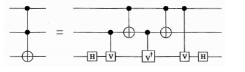

Controlled Gates
Contents
Controlled Gates#
Extra Credit
Everything on this page is extra credit.
down to control (many wires) is worth 5 points.
the control (many wires) section is much harder but worth an extra 5 points.
We would like to be able to take the control of an arbitrary unitary.
We want to be able to take any unitary \(U\) represented as a circuit and be able to add a control to it giving us a control-U. In some sense, this is easy. Our circuit can be decomposed into H, P, and CNOT gates. We can simply add a control wire to each of these gates giving us a set of control-H, control-phase, and control-CNOT gates. The only trick is to then re-decompose each of these into H, P, and CNOT gates.
We have already seen how to decompose a control-phase gate into our atomic gates. We know just need to figure out how to decompose a control-H and a control-CNOT.
Control-H#
Grading
Decompose a control-H gate into atomic gates.
Control-control not (i.e. toffeli)#
The second gate that we are going to use is a controlled-CNOT also known as a controlled-controlled-not (CCNOT) or a toffeli.
The CCNOT gate does what you expect; if both the controls are 1 then the not gate happens. Otherwise nothing happens.
This gate is very useful for various reasons including the fact that it makes for a universal reversible gate.
Show that 
where
(how do you get this matrix from the universal circuit element?) breaks the CCNOT down into universal gates. One way to show this is to build it into your simulator and then show it does the correct thing on all 8 basis elements.
Now go ahead and rewrite the V-gate in terms of our atomic gates.
Grading
Add it to your preprocessor using
tofelli 2 3 5
where the first two numbers are the wires for the control and the last wire is the wire for the not. Tofelli circuits are universal for (reversible) classical computing. This means that any classical function you have can be written with just tofelli (and anything written with just tofelli can be simulated classically - you can see the section on classical gates to see why this is? ::
This gives you an ability to do a control-unitary where you control against a single wire. In the next section, we will see that something can be implemented with multiple controls.
Control (many wires) not (and arbitrary unitaries)#
So far you have been able to apply an arbitrary unitary but only use one wire as control. Now see if you can build up something where you can have many control wires.
It’s (relatively) easy to do if you are allowed to double the number of wires using the extra wires as ancilla.
It’s (relatively) easy to do it if with any extra wires (ancilla) you let the number of gates explode exponentially with the number of control bits,
Neilson and Chuang have a question that says to do it without any extra wires (ancilla) using a number of gates that is quadratic.
Here claims you can do it with a linear number of gates.